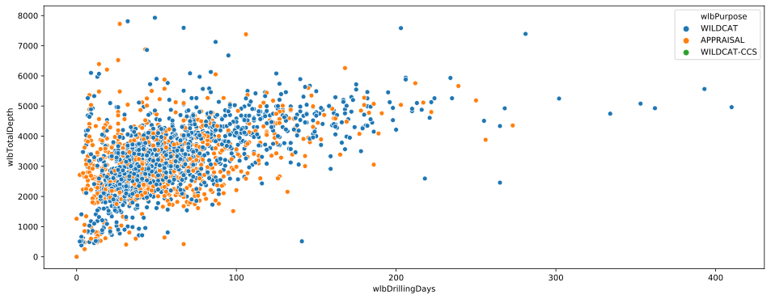

Data Visualization - Dataframes¶
Scatter plot - Seaborn¶
[6]:
import pandas as pd
[7]:
df = pd.read_csv("https://factpages.npd.no/ReportServer_npdpublic?/FactPages/TableView/wellbore_exploration_all&rs:Command=Render&rc:Toolbar=false&rc:Parameters=f&rs:Format=CSV&Top100=false&IpAddress=82.102.27.246&CultureCode=en")
[8]:
df.head()
[8]:
| wlbWellboreName | wlbWell | wlbDrillingOperator | wlbProductionLicence | wlbPurpose | wlbStatus | wlbContent | wlbWellType | wlbSubSea | wlbEntryDate | ... | wlbNpdidWellbore | dscNpdidDiscovery | fldNpdidField | fclNpdidFacilityDrilling | wlbNpdidWellboreReclass | prlNpdidProductionLicence | wlbNpdidSiteSurvey | wlbDateUpdated | wlbDateUpdatedMax | datesyncNPD | |
|---|---|---|---|---|---|---|---|---|---|---|---|---|---|---|---|---|---|---|---|---|---|
| 0 | 1/2-1 | 1/2-1 | Phillips Petroleum Norsk AS | 143 | WILDCAT | P&A | OIL | EXPLORATION | NO | 20.03.1989 | ... | 1382 | 43814.0 | 3437650.0 | 296245.0 | 0 | 21956.0 | NaN | 03.10.2019 | 03.10.2019 | 18.11.2019 |
| 1 | 1/2-2 | 1/2-2 | Paladin Resources Norge AS | 143 CS | WILDCAT | P&A | OIL SHOWS | EXPLORATION | NO | 14.12.2005 | ... | 5192 | NaN | NaN | 278245.0 | 0 | 2424919.0 | NaN | 03.10.2019 | 03.10.2019 | 18.11.2019 |
| 2 | 1/3-1 | 1/3-1 | A/S Norske Shell | 011 | WILDCAT | P&A | GAS | EXPLORATION | NO | 06.07.1968 | ... | 154 | 43820.0 | NaN | 288604.0 | 0 | 20844.0 | NaN | 03.10.2019 | 03.10.2019 | 18.11.2019 |
| 3 | 1/3-2 | 1/3-2 | A/S Norske Shell | 011 | WILDCAT | P&A | DRY | EXPLORATION | NO | 14.05.1969 | ... | 165 | NaN | NaN | 288847.0 | 0 | 20844.0 | NaN | 03.10.2019 | 03.10.2019 | 18.11.2019 |
| 4 | 1/3-3 | 1/3-3 | Elf Petroleum Norge AS | 065 | WILDCAT | P&A | OIL | EXPLORATION | NO | 22.08.1982 | ... | 87 | 43826.0 | 1028599.0 | 288334.0 | 0 | 21316.0 | NaN | 03.10.2019 | 03.10.2019 | 18.11.2019 |
5 rows × 87 columns
[9]:
import numpy as np
import matplotlib.pyplot as plt
import seaborn as sns
%matplotlib inline
[14]:
plt.figure(figsize=(16, 6))
sns.scatterplot(x="wlbDrillingDays",
y="wlbTotalDepth",
hue="wlbPurpose",
data=df)
[14]:
<matplotlib.axes._subplots.AxesSubplot at 0x16852823608>

Histogram - Seaborn¶
What is the distribution of number of drilling days for all exploration wells for top 10 drilling opperators
[15]:
operators_top_10 = list(df["wlbDrillingOperator"].value_counts().index[1:10])
operators_top_10
[15]:
['Norsk Hydro Produksjon AS',
'Statoil Petroleum AS',
'Saga Petroleum ASA',
'Lundin Norway AS',
'Esso Exploration and Production Norway A/S',
'A/S Norske Shell',
'Elf Petroleum Norge AS',
'Phillips Petroleum Company Norway',
'Statoil ASA (old)']
[26]:
data = (df
.query("wlbDrillingOperator == @operators_top_10")
.filter(items=['wlbDrillingDays'])
)
sns.distplot(data, kde=False, rug=True);

How many wells were drilled within a certain window of Total Depth and Drilling Days?
[ ]: